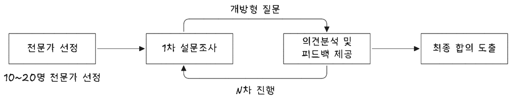
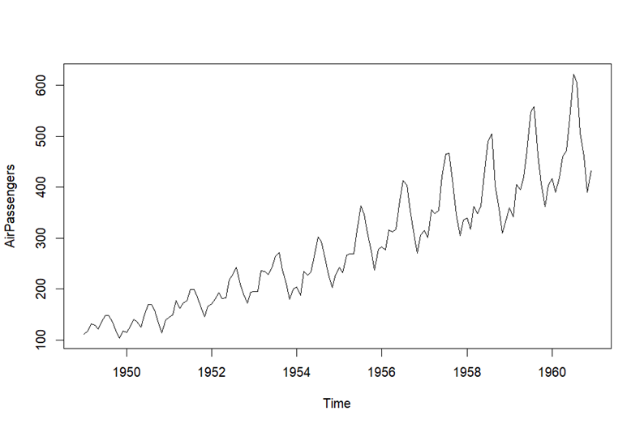
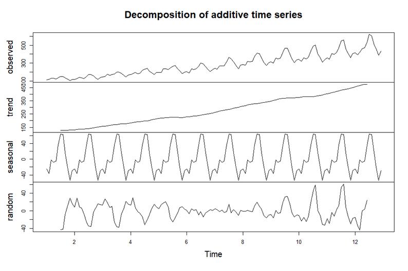

flowchart LR
subgraph s1[" "]
10["정성적 예측법<br>(질적 예측 기법)"]
11["직관을 이용한 예측"]
12["시장 조사에 의한 예측"]
13["유추에 의한 예측"]
11 --- 111("델파이법")
11 --- 112("판매원 의견 종합법")
11 --- 113("경영자 판단법")
11 --- 114("위원회 홥의법, 패널 동의법")
12 --- 121("시장조사법")
13 --- 131("라이프 사이클 유추법")
13 --- 132("자료 유추법")
10 --- 11 & 12 & 13
end
subgraph s2[" "]
20["정량적 예측법<br>(양적 예측 기법)"]
21["시계열 예측기법"]
22["인과관계 예측기법"]
21 --- 211("이동 평균법")
21 --- 212("지수 평활법")
21 --- 213("수학적 모형")
21 --- 214("Box-Jenkins")
21 --- 215("추세 분석법")
22 --- 221("회귀분석")
22 --- 222("계량경제모델")
22 --- 223("투입-산출 모형")
22 --- 224("시뮬레이션 모형")
22 --- 225("선도지표법")
20 --- 21 & 22
end
예측기법 --- 10 & 20
style 20 fill:#efefff
style 10 fill:#efffef
style 예측기법 fill:#d0e8f1
수요예측
Keywords
수요예측, 시계열, 지수평활법, 회귀분석, 델파이법, 경영자 판단법, 예측오차, 추적지표
수요예측 기법
수요예측은 미래 제품이나 서비스에 대한 고객 수요를 과거 데이터와 다양한 분석기법을 활용하여 예측하는 과정이다. 수요예측 기법에는 정량적 예측기법과 정성적 예측기법이 있다. 정량적 예측기법은 과거 데이터와 통계적 분석을 기반으로 수요를 예측하며 시계열 예측기법과 인과관계 예측기법이 있다. 반면 정성적 예측기법은 과거 데이터가 부족하거나 데이터만으로 설명하기 어려운 상황에서 전문가 지식, 경험, 직관 등을 활용해 수요를 예측하는 방식이다. 대표적인 방법으로 델파이법, 시장조사법, 자료 유추법이 있다.
정성적 기법
정성적 기법(Qualitative Methods)은 과거 데이터가 부족하거나 데이터만으로 설명하기 어려운 상황에서 전문가의 지식, 경험, 직관 등을 활용해 수요를 예측하는 방법이다.
델파이법
델파이법(Delphi Method)은 전문가들의 의견을 체계적으로 수집하고 종합하여 미래의 사건이나 수요를 예측하는 정성적 수요예측 기법이다. 이 방법은 반복적인 설문조사와 피드백 과정을 통해 의견을 수렴하고, 전문가들 간의 합의에 도달하는 것을 목표로 한다.
- 델파이법의 특징
-
- 전문가 집단의 의견 수렴
- 다양한 분야의 전문가들이 익명으로 참여하여 편향을 최소화함
- 반복적인 피드백
- 여러 차례의 라운드를 통해 의견을 조정하고 합의 도출
- 익명성 보장
- 개인의 지위나 권위에 영향을 받지 않고 자유롭게 의견 제시 가능
- 정성적 접근
- 수량화된 데이터보다 전문가의 지식과 경험을 기반으로 분석

- 델파이법 진행 절차
-
- 전문가 선정
- 예측하고자 하는 분야의 지식과 경험이 풍부한 전문가 그룹 구성
- 다양한 관점을 반영하기 위해 10~20명 정도의 인원이 적절함
- 전문가 선정
- 1차 설문조사
- 미래 사건이나 수요에 대한 초기 의견 수집
- 개방형 질문을 활용하여 자유롭게 의견을 제시할 수 있도록 함
- 의견 분석 및 피드백 제공
- 수집된 의견을 분석하여 공통된 내용과 차이점을 도출
- 요약된 피드백을 전문가들에게 공유하여 재검토 요청
- 반복 설문조사 (2차, 3차…)
- 전문가들이 피드백을 참고하여 의견을 수정하거나 보완
- 의견의 수렴이 이루어질 때까지 과정을 반복
- 최종 합의 도출
- 반복 과정 후, 전문가 의견이 수렴되면 최종적인 예측 결과 도출
- 수요 예측, 정책 결정, 기술 전망 등에 활용
| 장점 | 단점 |
|---|---|
| 전문가의 집단 지혜를 활용하여 신뢰성 높은 예측 가능 | 전문가 선정 과정에서 주관적 편향 발생 가능성 있음 |
| 익명성을 보장해 자유롭고 솔직한 의견 개진 가능 | 설문조사와 반복 과정으로 시간과 비용이 많이 소요됨 |
| 반복적인 피드백을 통해 의견 수렴 및 합의 도출 가능 | 전문가 간 의견 불일치 시 최종 합의 도출이 어려울 수 있음 |
| 수량적 데이터 부족 시에도 유용하게 활용 가능 | 정성적 방법이므로 객관적 데이터 기반의 예측에 한계 있음 |
- 델파이법의 활용 사례
-
- 수요 예측: 신제품 출시 전 시장 반응 예측, 장기 수요 전망
- 기술 예측: 미래 기술 개발 동향 및 산업 발전 방향 분석
- 정책 개발: 공공 정책이나 전략 수립 시 전문가 의견 수렴
- 리스크 관리: 기업의 위기 대응 시나리오 개발 및 평가
- 수요 예측: 신제품 출시 전 시장 반응 예측, 장기 수요 전망
델파이법은 미래 예측이 어려운 상황에서 전문가의 지식과 경험을 효과적으로 활용할 수 있는 강력한 도구이다. 특히 정량적 데이터가 부족하거나 불확실성이 높은 분야에서 전략적 의사결정에 중요한 역할을 한다. 다만, 시간과 자원이 많이 소요되는 만큼 효율적인 진행을 위해 전문가 선정과 의견 수렴 과정의 체계적 관리가 필요하다.
중역판단법
중역판단법(Executive Judgment Method) 또는 경영진 의견 종합법은 조직의 중역 또는 고위 경영진의 경험과 직관을 기반으로 미래 수요를 예측하는 정성적 수요예측 기법이다. 이 방법은 특히 신속한 의사결정이 필요하거나 과거 데이터가 부족한 상황에서 활용된다.
- 중역판단법의 특징
-
- 경영진의 경험과 직관 활용
- 데이터보다는 조직 내 고위층의 시장 통찰력과 전략적 사고에 의존
- 간단한 의사결정 과정
- 복잡한 통계 분석 없이 빠르게 수요를 예측할 수 있음
- 유연한 적용 가능
- 정형화된 절차가 없으며 다양한 상황에 적용 가능
- 신제품 개발, 시장 진입 전략 수립 등에서 유용
- 중역판단법의 절차
-
- 중역 및 전문가 선정
- 회사의 전략적 방향과 시장 이해도가 높은 고위 경영진, 부서 책임자 등이 참여
- 정보 공유 및 토론
- 수요 예측과 관련된 시장 동향, 경쟁 상황, 내부 데이터 등을 공유
- 각자의 관점에서 의견을 개진하며 토론 진행
- 수요 예측과 관련된 시장 동향, 경쟁 상황, 내부 데이터 등을 공유
- 의견 종합 및 조정
- 다양한 의견을 종합하고 조율하여 수요 예측치 도출
- 필요 시 추가 논의를 통해 예측치 보완
- 다양한 의견을 종합하고 조율하여 수요 예측치 도출
- 최종 수요 예측 결정
- 합의된 수요 예측 결과를 바탕으로 의사결정 및 계획 수립
- 중역 및 전문가 선정
| 장점 | 단점 |
|---|---|
| 빠른 의사결정이 가능하여 긴급한 상황에서 효과적 | 개인의 직관과 경험에 의존하여 주관적 편향 발생 가능성 있음 |
| 과거 데이터가 부족한 신제품, 신시장 분석에 유용 | 데이터 기반의 분석이 부족해 정확성이 떨어질 수 있음 |
| 다양한 부서와 관점의 통합으로 전략적 시각 확보 가능 | 소수의 의견이 지배적일 경우 집단사고(Groupthink) 위험 존재 |
| 복잡한 통계 분석 없이 간단하게 적용 가능 | 예측의 일관성 부족, 반복성 있는 상황에서 신뢰성 저하 가능성 있음 |
- 중역판단법의 활용 사례
-
- 신제품 출시: 과거 데이터가 부족한 신제품 수요 예측
- 긴급 대응: 시장 급변 상황에서 빠른 전략 수립 필요 시
- 전략 기획: 기업의 중장기 계획 및 시장 진입 전략 수립
- 프로젝트 초기 단계: 초기 데이터 수집 전 대략적인 수요 예측
- 신제품 출시: 과거 데이터가 부족한 신제품 수요 예측
중역판단법은 빠른 의사결정과 전략적 통찰력이 중요한 상황에서 효과적인 수요예측 방법이다. 특히 데이터가 부족하거나 급변하는 시장 환경에서 유용하게 활용된다. 그러나 주관적 편향과 의견 지배의 위험성을 최소화하기 위해 다양한 관점의 균형 있는 의견 수렴과 비판적 사고가 필요하다. 델파이법이나 정량적 기법과 병행하면 더 신뢰성 있는 예측이 가능하다.
판매원 추정법
판매원 추정법(Sales Force Composite Method)은 수요예측 기법 중 하나로, 현장에서 활동하는 판매원들의 의견과 추정을 바탕으로 미래의 수요를 예측하는 방법이다. 이 방법은 특히 직접 고객과 접촉하는 영업사원이 고객의 수요 변화를 빠르게 파악할 수 있다는 점에 착안하여 개발된 기법이다.
- 판매원 추정법 과정
-
- 개별 판매원의 수요 예측
- 각 영업사원이 담당 지역이나 고객군에 대한 향후 수요를 추정
- 추정은 영업 경험, 고객 피드백, 시장 동향 등을 기반으로 함
- 각 영업사원이 담당 지역이나 고객군에 대한 향후 수요를 추정
- 영업 관리자 검토 및 조정
- 개별 판매원의 예측 결과를 영업 관리자 또는 팀장이 검토하고 조정
- 과도한 낙관적/비관적 전망을 수정하여 현실적인 수치로 보정
- 개별 판매원의 예측 결과를 영업 관리자 또는 팀장이 검토하고 조정
- 통합 및 최종 예측
- 모든 지역 또는 팀의 수요 추정치를 집계하여 전체 수요를 예측
- 필요한 경우, 추가적인 분석이나 조정 과정을 거쳐 최종 수요를 확정
- 모든 지역 또는 팀의 수요 추정치를 집계하여 전체 수요를 예측
- 개별 판매원의 수요 예측
| 장점 | 단점 |
|---|---|
| 고객과의 직접적인 접촉 정보 활용 시장 변화와 고객 수요를 빠르게 반영 가능 |
주관적 편향 가능성 낙관적 또는 비관적인 추정으로 인한 오류 발생 가능성 |
| 현장 중심의 실용적 예측 실무 경험이 풍부한 영업사원의 현장 감각 반영 |
일관성 부족 판매원의 경험과 분석 능력에 따라 예측의 일관성이 부족할 수 있음 |
| 신속한 예측 가능 복잡한 통계 분석 없이 빠르게 수요 예측 가능 |
성과 목표와의 혼동 가능성 판매 목표와 수요 예측을 혼동할 위험 존재 |
| 의사소통 강화 판매원과 관리층 간의 커뮤니케이션 강화 효과 |
데이터 부족 문제 객관적 데이터 없이 감에 의존할 가능성 존재 |
- 판매원 추정법의 활용 사례
-
- B2B 산업: 영업사원이 고객사와 긴밀한 관계를 유지하고 있어 수요 변화 예측이 효과적
- 신제품 출시 초기: 과거 데이터가 부족한 상황에서 영업 현장의 의견이 중요
- 지역 특화 제품: 특정 지역 시장의 특수한 수요를 반영할 때 유용
- B2B 산업: 영업사원이 고객사와 긴밀한 관계를 유지하고 있어 수요 변화 예측이 효과적
- 효과적인 활용을 위한 팁
-
- 판매원 교육 강화: 객관적이고 현실적인 수요 예측을 위해 판매원들에게 예측 기법 교육 실시
- 성과 목표와의 분리: 수요 예측과 판매 목표를 명확히 구분하여 주관적 편향 최소화
- 정량적 기법과의 병행: 객관성을 높이기 위해 정량적 데이터와 병행하여 활용
- 판매원 교육 강화: 객관적이고 현실적인 수요 예측을 위해 판매원들에게 예측 기법 교육 실시
판매원 추정법은 현장 정보와 직관을 빠르게 활용할 수 있는 장점이 있지만, 주관적 편향의 위험이 존재한다. 따라서 관리자의 검토 과정과 정량적 데이터의 보완을 통해 더 정확한 수요 예측이 가능하다.
소비자 조사법
소비자 조사법(Consumer Survey Method)은 수요예측 기법 중 하나로, 직접 소비자를 대상으로 설문조사, 인터뷰, 또는 피드백을 수집하여 미래의 수요를 예측하는 방법이다. 이 방법은 소비자의 구매 의향, 선호도, 기대치를 파악함으로써 보다 정확한 수요 예측이 가능하다는 점에서 유용하다.
- 소비자 조사법 주요 방법
-
- 설문조사 (Surveys)
- 표준화된 질문지를 통해 다수의 소비자에게 구매 계획, 선호도, 구매 빈도 등의 정보를 수집
- 온라인 설문, 전화 설문, 대면 설문 등 다양한 방식 활용
- 표준화된 질문지를 통해 다수의 소비자에게 구매 계획, 선호도, 구매 빈도 등의 정보를 수집
- 심층 인터뷰 (In-depth Interviews)
- 개별 소비자와의 인터뷰를 통해 심층적인 소비 심리와 수요 요인을 분석
- 정성적 데이터 확보에 효과적
- 포커스 그룹 (Focus Groups)
- 소규모 소비자 그룹을 대상으로 토론을 진행하여 제품에 대한 인식과 개선점 파악
- 신제품 개발 초기 단계에서 유용
- 소규모 소비자 그룹을 대상으로 토론을 진행하여 제품에 대한 인식과 개선점 파악
- 관찰 조사 (Observation)
- 소비자의 구매 행동을 직접 관찰하거나, 구매 데이터를 분석하여 수요를 추정
- 오프라인 매장이나 온라인 쇼핑몰에서 활용 가능
- 소비자의 구매 행동을 직접 관찰하거나, 구매 데이터를 분석하여 수요를 추정
- 설문조사 (Surveys)
| 장점 | 단점 |
|---|---|
| 직접적인 소비자 의견 반영 수요 예측의 정확성 향상 |
비용과 시간 소요 대규모 조사 시 높은 비용과 긴 시간 필요 |
| 신제품 수요 예측에 효과적 과거 데이터가 없는 경우 유용 |
응답의 신뢰성 문제 소비자의 불성실한 응답 또는 실제 행동과의 불일치 가능성 |
| 시장 변화에 대한 빠른 반응 최신 트렌드와 소비자 니즈 파악 가능 |
표본 대표성 문제 표본이 전체 시장을 정확히 반영하지 못할 수 있음 |
| 세부적인 소비자 인사이트 제공 구매 동기, 선호도, 브랜드 인식 등 분석 가능 |
데이터 분석의 어려움 정성적 데이터 해석이 복잡하고 주관적일 수 있음 |
- 소비자 조사법의 활용 사례
-
- 신제품 출시 전 수요 예측
- 소비자의 구매 의향 파악을 통해 초기 수요 예측
- 브랜드 리뉴얼 또는 마케팅 전략 수립
- 소비자의 인식과 반응을 기반으로 전략 수립
- 서비스 개선
- 기존 제품/서비스에 대한 소비자 만족도 조사로 개선 포인트 도출
- 특정 타겟 시장 분석
- 특정 연령대, 지역, 또는 관심사 기반 소비자 집단의 수요 분석
- 효과적인 활용을 위한 팁
-
- 표본의 대표성 확보
- 시장을 잘 대변할 수 있는 다양한 소비자 그룹 선정
- 질문 설계의 객관성 유지
- 편향된 질문을 피하고 명확한 질문 구성
- 정량적·정성적 데이터의 병행 활용
- 설문조사(정량)와 심층 인터뷰(정성)를 병행하여 심층적 분석
- 정기적인 조사 수행
- 소비자 행동은 시간에 따라 변화하기 때문에 정기적으로 조사 업데이트
소비자 조사법은 직접적인 소비자 의견을 바탕으로 수요를 예측하기 때문에 시장 변화에 민감하게 대응할 수 있다. 그러나 높은 비용과 시간 소요, 응답 신뢰성 문제 등을 고려하여 다른 수요 예측 기법과 병행하는 것이 효과적이다.
정량적 기법
정량적 기법(Quantitative Methods)은 과거의 수치 데이터와 통계적 분석을 기반으로 수요를 예측하는 방법이다. 주로 수학적 모델, 통계 분석, 데이터 처리를 활용하며 예측의 객관성과 정확성이 높다.
시계열 분석
시계열 분석(Time Series Analysis) 기법은 과거 자료를 근거하여 시간에 따른 수요변동 형태를 분석하고, 수요 패턴을 파악하여 미래에 투영하여 수요를 예측한다.
이동평균법
이동평균법(Moving average method)은 전기수요법을 좀 더 발전시킨 것으로 과거 일정 기간 실적을 평균해서 예측하는 방법으로 단순이동평균법과 가중이동 평균법이 있다.
- 단순이동평균법(Simple moving average method)
-
- 과거 여러 기간 실적치에 동일한 가중치를 부여하는 방법
- 공식 \[ F_t = \frac{\sum_{i=1}^{n}{A_{t-i}}}{n} \tag{6.1}\] \[{단, \ F_t = t기간 예측치, \quad A_{i-i} = (t-i) 기간 실적치, \quad n = 기간 수}\]
- 가중이동평균법(Weighted moving average method)
-
- 단순이동평균법에서 추세경향을 고려한 수요 예측기법
- 공식 \[ F_{t+1} = w_tA_t + w_{t-1}A_{t-1} + ... + w_{t-N}A_{t-N} \tag{6.2}\] \[단, \ \sum_{i=1}^{n}{w_i} = 1\]
지수평활법
지수평활법(Exponential smoothing)은 최소자승법이나 이동평균법에는 장기간 과거실적을 필요로 하지만 지수평활법(Exponential smoothing)은 최근 데이터만으로 예측이 가능한 장점이 있다. 현 시점에 가까운 실측치에 큰 비중을 주면서 과거로 거슬러 올라갈수록 그 비중을 지수적으로 적게 주는 지수가중 이동평균법이다.
차기 예측치 = 당기 예측치 + \(\alpha\)(당기실적치 - 당기예측치)로 계산되며 공식은 아래와 같다.
\[ F_t = F_{t-1} + \alpha (A_{t-1} - F_{t-1}) = \alpha A_{t-1} + (1-\alpha)F_{t-1} \tag{6.3}\]
\[단, \ \alpha는 \ 지수평활계수로 \ 0 < \alpha < 1\]
예측오차
정의
예측오차(Forecast error)는 실제 수요와 예측된 수요 간 차이를 의미하며, 수요예측 정확도를 평가하는 데 사용되는 지표이다.
발생원인
예측오차가 발생하는 원인은 다음과 같다.
- 예측모형에 사용한 변수 처리를 적절하게 하지 못한 경우
- 중요한 변수 생략
- 예측모형이 처리할 수 없는 변수 변동이나 움직임(추세나 순환변동이 갑자기 발생)
- 새로운 변수 발생(신규 경쟁자 등)으로 인해 모형이 부적절한 경우
- 이상 기후나 기타 자연적 현상, 일시적인 과부족이나 고장, 재난, 기타 사유로 인한 불규칙 변동이 발생한 경우
- 예측기법을 잘못 사용하였거나 결과를 잘못 해석한 경우
- 다른 모든 변동요인들로 설명되고 난 나머지 내재적인 우연변동
예측오차 지표
예측오차에 있어 대표적인 지표는 다음과 같다.
- 예측오차
- \[E_t = A_t - F_t \ = \ \text{(t시점 실적치)} - \text{(t시점 예측치)} \tag{6.4}\]
- 평균절대편차(MAD, Mean Absolute Deviation)
- \[ MAD = \frac{\sum_{t=1}^{n}|A_t - F_t|}{n} \tag{6.5}\]
- 누적예측오차(RSFE, running sum of forcasting errors / CFE, cumulative sum of forecast errors)
- \[RSFE(or \ CFE) = \sum{E_t} \tag{6.6}\]
- 평균절대오차(MAE, mean absolute error)
- \[MAE = \frac{\sum{|E_t|}}{n} \tag{6.7}\]
- 평균제곱오차(MSE, mean squared error)
- \[MSE = \frac{\sum{|(E_t)^2|}}{n-1} \tag{6.8}\]
- 평균절대백분율오차(MAPE, mean absolute percentage error)
- \[ MAPE = \frac{\sum{\frac{|E_t|}{A_t}}}{n} \times 100 \tag{6.9}\]
- 추적지표(TS, tracking signal)
- \[TS = \frac{RSFE}{MAD} \tag{6.10}\]
추적지표
추적지표(TS)는 예측기법이 실제 수요변화를 정확히 예측하고 있는지를 나타내는 지표이다. 예측치가 실측치를 잘 따라가고 있으면 TS는 0에 가까운 값을 갖는다. 예측치가 실제치보다 작은 경우(A-F>0) TS는 양수값을 갖게 되고 이는 과소예측을 의미한다. 반면 예측치가 실측치보다 큰 경우(A-F<0) TS는 음수값을 가지며 과다예측을 의미한다.
수요 불확실성 감소 방안
수요 예측 불확실성
수요예측 불확실성이란 제품이나 서비스에 대한 미래 수요를 정확하게 예측하는 데 있어서 발생하는 오차나 변동성을 의미한다. 이는 소비자 행동, 시장 환경, 경쟁 상황 등 다양한 요인에 의해 발생하며, 기업의 생산 계획, 재고 관리, 공급망 운영 등에 큰 영향을 미친다.
수요예측 불확실성의 원인
| 원인 | 설명 |
|---|---|
| 시장 변화 | 소비자 선호도, 경제 상황, 계절성 등 급격한 변화 발생 |
| 신제품 출시 | 신규 제품에 대한 수요 패턴 파악 어려움 |
| 경쟁 환경 변화 | 경쟁사의 가격, 마케팅, 신제품 등 전략 변화로 수요 변동 |
| 기술 발전 | 신기술 도입에 따른 소비자 행동 변화 |
| 외부 환경 요인 | 자연재해, 정치적 이슈, 법규 변경 등 예측 불가능한 외부 변수 |
| 데이터 품질 문제 | 부정확하거나 불완전한 과거 데이터로 인한 예측 오류 |
수요예측 불확실성의 영향
- 재고 과잉 또는 부족: 재고 유지 비용 상승 또는 판매 기회 상실
- 생산 계획 차질: 과잉 생산으로 인한 비용 증가 또는 납기 지연
- 공급망 비효율: 공급자와의 조율 어려움, 리드 타임 증가
- 고객 서비스 저하: 제품 부족 시 고객 불만 및 이탈 위험 증가
- 경영 의사결정 불안정: 전략 수립 및 투자 판단의 어려움
불확실성 관리 방안
예측 기법 다변화 및 정교화
- 통계적 방법(이동평균, 지수평활법 등)과 AI, 머신러닝 기반 예측 병행
- 여러 시나리오 분석 및 민감도 분석 활용
실시간 데이터 활용
- POS, IoT, SNS 등 실시간 수요 데이터 수집 및 반영
- 빠른 정보 공유 및 피드백 시스템 구축
수요 변동성 완화 전략
- 안전재고 설정 및 유연한 생산 시스템 도입
- 공급망 다변화 및 협력 강화
협업 예측 (Collaborative Forecasting)
- 공급자, 유통업체 등과의 수요 정보 공유 및 공동 예측 수행
민첩한 대응 체계 구축
- 생산 및 물류의 신속한 조정, 긴급 대응 프로세스 마련
수요예측 불확실성은 모든 기업이 직면하는 현실적 문제로, 이를 효과적으로 관리하지 못하면 비용 상승과 고객 만족도 저하로 이어진다. 다양한 예측 기법과 실시간 데이터 활용, 공급망 협력 강화 등을 통해
불확실성을 최소화하고 민첩하게 대응하는 것이 경쟁력 확보의 핵심이다.
채찍효과
채찍효과(Bullwhip Effect)는 공급망 내에서 소비자의 수요 변동이 점차 상위 단계로 올라갈수록 증폭되어 나타나는 현상을 말한다. 즉, 최종 소비자 수요의 작은 변화가 공급자, 제조업체, 유통업체 등 공급망의 각 단계에서 점점 더 크게 확대되어 재고 과잉, 납기 지연, 비용 상승 등 부정적 결과를 초래한다.
채찍효과 발생 원인
| 원인 | 설명 |
|---|---|
| 수요 정보 왜곡 | 각 단계별로 수요 정보를 자체적으로 해석하여 과장 또는 축소함 |
| 불확실성 및 예측 오류 | 수요 예측의 불확실성으로 인해 안전재고를 과도하게 설정함 |
| 주문 배치 크기 변동 | 주문을 일정한 간격이나 대량으로 묶어 발주하면서 변동성 증가 |
| 가격 변동 및 프로모션 | 할인, 특가 행사 등으로 인한 수요 급증과 이후 감소 반복 |
| 리드 타임 지연 | 공급 및 생산 지연이 주문량 변동을 심화시킴 |
| 불충분한 정보 공유 | 공급망 참여자 간 실시간 데이터 공유 부족 |
채찍효과의 문제점
- 재고 과잉 및 부족: 비효율적인 재고 운용으로 비용 증가와 서비스 저하
- 공급망 비용 상승: 과도한 생산, 운송, 보관 비용 발생
- 납기 지연: 주문 급증과 공급 불일치로 납기 일정 불확실
- 생산 및 공급 불균형: 생산 스케줄과 자원 배분 비효율화
- 고객 만족도 저하: 제품 부족 또는 과잉 재고로 서비스 품질 저하
채찍효과 완화 방안
| 방안 | 설명 |
|---|---|
| 정보 공유 강화 | 실시간 수요 데이터 및 재고 정보 공유로 수요 변동 투명화 |
| 수요 예측 정확성 향상 | 협업 예측(Collaborative Forecasting) 및 빅데이터 활용 |
| 주문 주기 및 크기 조절 | 주문 배치 크기 최소화 및 주문 빈도 증가로 변동성 감소 |
| 가격 정책 안정화 | 프로모션 및 할인 정책 계획적 운영으로 수요 왜곡 방지 |
| 리드 타임 단축 | 생산 및 물류 프로세스 개선을 통한 공급 속도 향상 |
| 공급망 파트너 협력 강화 | 신뢰 기반의 장기 협력 관계 구축 및 계약 조건 명확화 |
채찍효과는 공급망 전체의 효율성과 비용 구조에 심각한 악영향을 미친다. 이를 줄이기 위해서는 공급망 전 단계의 긴밀한 협력과 실시간 정보 공유가 필수적이다. 또한, 주문 관리, 가격 정책, 생산 및 물류의 전반적 개선을 통해 수요 변동성을 최소화하고 공급망 안정성을 확보하는 노력이 필요하다.
주요 수요변동 관리 방안
시계열 분석을 통해 수요 변동을 예측할 때, 추세(Trend), 계절성(Seasonality), 주기적 변동(Cyclic Variation), 불규칙 변동(Irregular Variation) 등 네 가지 요인이 영향을 미친다.
수요변동 형태
시계열 수요 자료에서 관찰할 수 있는 수요 변동 형태는 과거 데이터를 분석해 미래 수요를 예측하는 데 중요한 역할을 한다. 이러한 변동 형태는 주로 네 가지로 구분된다.


| 구분 | 정의 | 특징 | 예시 |
|---|---|---|---|
| 추세 (Trend) | 수요가 장기간에 걸쳐 일정한 방향으로 증가하거나 감소하는 패턴을 의미. | 시간이 지남에 따라 꾸준히 변화하며, 직선형 또는 곡선형으로 나타날 수 있음. | 기술 발전에 따라 스마트폰 판매량이 지속적으로 증가하는 경우. |
| 계절성 (Seasonality) | 일정 주기로 반복되는 수요 변동 형태로, 주기적으로 수요가 높아지거나 낮아짐. | 연간, 분기별, 월별 등 특정 기간에 반복되는 패턴이 명확하게 나타남. | 여름철 에어컨 판매 증가, 연말 쇼핑 시즌의 매출 급증. |
| 주기적 변동 (Cyclic Variation) | 경제 환경이나 시장 변화에 따라 발생하는 장기적인 수요 변동을 의미. | 계절성과 달리 불규칙하고, 주기가 길며 경기 순환에 따라 발생하는 경우가 많음. | 경기 호황기와 불황기에 따른 자동차 판매량 변화. |
| 불규칙 변동 (Irregular Variation) | 예측 불가능한 외부 요인으로 발생하는 비정상적인 수요 변동. | 갑작스럽고 예측이 어렵기 때문에 일반적인 패턴으로 설명되지 않음. | 코로나19 팬데믹으로 인한 마스크 및 의료용품 수요 급증. |
이러한 변동 형태를 파악하면 기업은 수요 예측을 보다 정확하게 수행하고, 재고 관리 및 생산 계획을 효율적으로 수립할 수 있다. 특히, 계절성과 추세는 예측 모델에서 중요한 요소로 반영된다.
수요 변동 공급 관리
수요 변동에 따라 효율적인 공급 관리 전략을 수립하는 것이 중요하다.
추세는 장기적인 관점에서 수요가 증가하거나 감소하는 패턴을 의미한다.
- 관리 방안
-
- 수요 증가 시
- 생산 능력 확장: 설비 투자, 인력 증원, 자동화 시스템 도입
- 재고 정책 조정: 안전재고 확대, 공급망 최적화
- 공급업체와의 협력 강화: 장기 계약 체결로 원자재 확보
- 생산 능력 확장: 설비 투자, 인력 증원, 자동화 시스템 도입
- 수요 감소 시
- 생산 조정: 감산 운영, 근무 일정 최적화(교대제 조정)
- 비용 절감 전략: 원가 절감, 생산 프로세스 개선
- 시장 다변화: 신제품 개발, 신규 시장 진출
- 생산 조정: 감산 운영, 근무 일정 최적화(교대제 조정)
- 수요 증가 시
계절성은 일정한 주기(월별, 계절별)로 반복되는 수요 변동을 의미한다.
- 관리 방안
-
- 시즌별 생산 전략
- 피크 시즌 전 선제적 생산: 성수기 수요를 예측하여 사전 생산 및 재고 축적
- 린(Lean) 생산 도입: 유연한 생산 시스템 구축
- 공급망 최적화
- 계약 생산 활용: 수요가 급증하는 시즌에 외부 공급업체 활용
- 공급업체와의 협업 강화: 원자재 확보 계획 사전 수립
- 계약 생산 활용: 수요가 급증하는 시즌에 외부 공급업체 활용
- 유통 및 물류 대응
- 배송 역량 강화: 피크 시즌 물류 지연 방지를 위한 운송 네트워크 최적화
- 유연한 인력 배치: 성수기 단기 계약직 채용
- 배송 역량 강화: 피크 시즌 물류 지연 방지를 위한 운송 네트워크 최적화
- 시즌별 생산 전략
주기적 변동은 경기 변화, 시장 트렌드 변화 등과 관련된 장기적인 수요 변동을 의미한다.
- 관리 방안
-
- 장기적 생산 계획 수립
- 경기 예측 데이터 활용: 경제 동향 분석을 통해 수요 변화 대응
- 유연한 생산 능력 확보: 시장 변화에 따라 생산량을 조절할 수 있는 설비 구축
- 경기 예측 데이터 활용: 경제 동향 분석을 통해 수요 변화 대응
- 공급망 리스크 관리
- 다중 공급업체 운영: 특정 공급업체 의존도를 낮추고 유연한 조달 체계 구축
- 재고 분산 전략: 주요 거점별로 분산 보관하여 시장 변동성 대응
- 다중 공급업체 운영: 특정 공급업체 의존도를 낮추고 유연한 조달 체계 구축
- 비용 최적화 전략
- 변동 비용 활용: 고정비 부담을 줄이기 위해 아웃소싱, 임시 인력 활용
- 제품 포트폴리오 조정: 수요 변화에 따라 생산 아이템 조정
- 변동 비용 활용: 고정비 부담을 줄이기 위해 아웃소싱, 임시 인력 활용
- 장기적 생산 계획 수립
불규칙 변동은 자연재해, 팬데믹, 정치적 요인 등 예측하기 어려운 돌발적인 수요 변화를 의미한다.
- 관리 방안
-
- 리스크 대응 체계 구축
- 재난 대비 계획(BCP, Business Continuity Plan) 수립
- 긴급 조달 네트워크 구축: 다변화된 공급망 확보
- 재난 대비 계획(BCP, Business Continuity Plan) 수립
- 재고 전략 조정
- 안전재고 확보: 필수 품목에 대한 적정 수준의 안전재고 운영
- 재고 분산 관리: 단일 창고 의존도를 줄이고 지역별 분산 보관
- 안전재고 확보: 필수 품목에 대한 적정 수준의 안전재고 운영
- 생산 유연성 강화
- 모듈러 생산 시스템 도입: 다양한 제품을 빠르게 전환 가능하도록 설비 구성
- 실시간 데이터 분석 활용: AI 및 IoT를 활용한 수요 변동 모니터링
- 모듈러 생산 시스템 도입: 다양한 제품을 빠르게 전환 가능하도록 설비 구성
- 리스크 대응 체계 구축
수요 변동 요인에 따라 적절한 공급 관리 전략을 수립하는 것이 중요하며, 이를 위해 유연한 생산 시스템, 재고 관리 최적화, 공급망 리스크 관리 등의 접근법을 병행하는 것이 효과적이다.
수요예측 개선
다음과 같은 방법을 통해 수요예측을 개선할 수 있다.
- 과거 데이터 활용
- 추세 분석: 과거 수요 데이터를 기반으로 시간적 패턴을 분석하여 예측의 정확도를 높인다.
- 시계열 분석 기법: 예측 모델에 ARIMA, 지수 평활법(Exponential Smoothing)과 같은 시계열 분석 기법을 적용하여 미래 수요를 예측한다.
- 계절성 반영: 특정 계절이나 월별 패턴을 반영하는 계절조정 모델을 사용하여 예측 정확도를 높인다.
- 정성적 기법과의 결합
- 전문가 의견 활용: 정성적 예측 기법인 델파이 기법(Delphi Method)을 통해 전문가 의견을 반영한 수요 예측을 수행한다.
- 소비자 조사법: 소비자나 판매원의 피드백을 적극적으로 반영하여 수요 변화 예측에 반영한다.
- 변수 확대
- 외부 요인 반영: 경제적 요인(금리, 환율 등), 경쟁사의 변화, 마케팅 활동 등 외부 변수를 예측에 포함시켜 정확도를 높인다.
- 정성적 정보 추가: 고객의 심리적 요소나 사회적 트렌드 변화 등 비정량적인 요인도 예측 모델에 포함하여 수요를 더욱 정교하게 예측한다.
- 기계 학습(Machine Learning) 모델 도입
- 머신러닝 기법 활용: 회귀 분석, 의사결정나무(Decision Trees), 신경망(Neural Networks) 등을 이용해 데이터의 패턴을 학습하여 예측 정확도를 향상시킨다.
- 과거 데이터를 바탕으로 모델을 지속적으로 학습시켜 새로운 데이터에 대해 더 나은 예측을 할 수 있도록 개선한다.
- 모델 평가 및 조정
- 모델 성능 평가: 예측 모델의 성능을 평가하기 위해 RMSE(Root Mean Square Error), MAE(Mean Absolute Error) 등의 지표를 사용하여 예측 정확도를 점검하고, 부족한 부분을 보완한다.
- 주기적 업데이트: 시장의 변화나 수요의 패턴 변화를 반영하기 위해 예측 모델을 주기적으로 업데이트한다.
- 통합적 접근법
- 혼합 모델: 다양한 예측 기법(시계열 분석, 머신러닝, 전문가 의견)을 통합한 혼합 모델을 활용하여 예측의 정확성을 높인다.
- 다양한 예측 기법을 결합하여 각 기법의 강점을 살리고, 예측의 정확도를 향상시킬 수 있다.
신속대응
신속대응(QR: Quick Response)은 고객의 수요 변화에 빠르게 반응하여 재고를 최소화하고 납기 단축, 고객 만족도 향상을 목표로 하는 경영 및 생산 관리 전략이다. 주로 유통, 제조, 패션 등 수요 변동이 심한 산업에서 활용된다.
신속대응의 목적
- 재고 비용 절감: 과잉 재고 및 재고 부족 문제 최소화
- 납기 단축: 주문 후 생산 및 배송 시간을 최소화하여 고객 만족 증대
- 시장 변화 적응력 강화: 급변하는 소비자 트렌드와 수요에 신속 대응
- 공급망 효율성 제고: 공급자, 제조사, 유통업체 간 협력 강화
신속대응의 핵심 요소
| 요소 | 설명 |
|---|---|
| 정보 공유 | 실시간 판매 데이터, 수요 예측 정보의 투명한 공유 |
| 공급망 협력 | 공급자와의 긴밀한 협력 및 유연한 생산 체계 구축 |
| 생산 유연성 | 다품종 소량 생산, 생산 라인의 빠른 전환 가능 |
| 물류 최적화 | 신속한 배송 및 물류 시스템 운영 |
| IT 시스템 활용 | ERP, POS, SCM 등 정보 시스템을 통한 프로세스 자동화 |
신속대응 실행 전략
- 소비자 중심의 수요 관리: POS 데이터 기반 수요 분석과 예측
- 공급망 파트너와 협력 체계 구축: 정보 공유 및 리드 타임 단축
- 유연한 생산 시스템 도입: 모듈화, 표준화, 자동화 기술 활용
- 재고 관리 최적화: 적시 생산 및 적시 배송(JIT) 체계 운영
- 고객 맞춤형 서비스 확대: 빠른 제품 변경 및 맞춤 대응
신속대응의 장점과 한계
| 구분 | 장점 | 한계 및 도전 과제 |
|---|---|---|
| 비용 | 재고 비용 및 불필요한 생산 비용 감소 | 초기 시스템 구축 비용 및 IT 투자 부담 |
| 서비스 | 납기 단축, 고객 만족도 향상 | 공급망 전반의 높은 협력 수준 요구 |
| 시장 적응 | 변화하는 수요에 신속 대응으로 시장 경쟁력 강화 | 생산 유연성 부족 시 대응 한계 |
| 정보 관리 | 실시간 정보 활용으로 의사결정 정확성 증가 | 데이터 신뢰성 및 보안 문제 |
신속대응 적용 사례
- 패션 산업: 빠른 디자인 변경과 소량 생산으로 유행에 신속 대응
- 소매업체: POS 데이터 기반 재고 보충과 프로모션 대응
- 자동차 산업: 모듈화 생산과 공급망 협력으로 납기 단축
- 전자제품: 변화하는 기술 수요에 맞춘 유연한 생산 체계
신속대응(QR)은 급변하는 시장과 소비자 요구에 빠르게 적응하는 핵심 경쟁 전략이다. 정보 공유와 공급망 협력을 기반으로 한 유연한 생산과 물류 체계를 구축함으로써, 기업은 비용을 절감하고 고객 만족도를 높이며 시장 변화에 능동적으로 대응할 수 있다.
차별화 지연
차별화 지연(Delayed Differentiation)은 제품이나 서비스에 있어 기본적인 형태를 먼저 생산한 후, 고객 요구에 맞게 최종 제품이나 서비스를 맞춤화하는 전략이다. 이는 생산 효율성을 높이고, 고객 수요에 맞는 개인화된 서비스를 제공하기 위해 사용된다. 차별화 지연은 모듈러 디자인(Modular Design) 또는 지연된 맞춤화라고도 불리며, 특정 시점까지는 표준화된 생산을 유지하고, 그 후에 고객 요구에 맞춰 차별화된 제품이나 서비스를 제공하는 방식을 의미한다.
- 차별화 지연의 주요 특징
-
- 표준화된 생산
- 초기에는 대부분의 부품이나 프로세스가 표준화되어 생산된다. 이때, 제품의 핵심 기능이나 기본적인 디자인이 결정된다.
- 고객 맞춤화
- 고객의 요구나 특성에 맞는 차별화는 제품이나 서비스의 최종 단계를 통해 이루어진다. 고객의 요구가 명확히 드러나기 전까지는 표준화된 형태로 생산한다.
- 생산 효율성
- 표준화된 부품과 생산 과정을 사용하여 생산 효율성을 높이고, 생산 비용을 절감할 수 있다.
- 수요에 따른 유연성
- 고객이 특정 요구를 제시하기 전에 제품을 표준화하여 생산하고, 최종적으로 고객의 요구에 맞춰 제품을 완성할 수 있다. 이는 생산 과정에서의 유연성을 제공한다.
- 차별화 지연의 적용 예시
-
- 자동차 산업
- 자동차 제조에서 차별화 지연 전략을 적용할 수 있다. 예를 들어, 자동차 제조사가 기본 차체와 주요 부품을 표준화하여 생산한 후, 고객이 선택한 색상, 내장재, 엔진 타입 등에 맞게 마지막 단계에서 차별화를 추가한다.
- 컴퓨터 및 전자 제품
- 컴퓨터와 같은 전자 제품에서도 차별화 지연이 사용된다. 기본적인 하드웨어를 표준화된 부품을 사용하여 조립한 후, 고객이 원하는 소프트웨어나 기능을 추가하는 방식이다.
- 패션 산업
- 의류 브랜드는 기본적인 옷을 대량 생산한 후, 고객의 요구에 맞는 디자인 수정이나 맞춤화를 통해 최종 제품을 제공할 수 있다.
- 음식 및 외식 산업
- 패스트푸드 체인에서는 기본적인 식사 메뉴를 표준화하여 미리 준비해두고, 고객이 주문할 때마다 소스나 추가 토핑 등을 선택하여 차별화된 제품을 제공한다.
- 차별화 지연의 장점
-
- 비용 절감
- 표준화된 부품이나 서비스를 사용하여 생산 과정에서의 비용을 절감할 수 있다. 후속 맞춤화 작업만 수행하기 때문에 초기 생산이 효율적이다.
- 수요 예측
- 고객의 개별 요구 사항을 정확히 예측하기 어려운 경우, 차별화 지연 전략을 통해 고객의 실제 요구가 명확해질 때까지 대량 생산을 진행할 수 있다.
- 재고 관리 용이
- 제품의 기본 형태를 대량으로 생산해두어야 하므로, 일정량 이상의 재고를 보유해야 할 수 있다. 이는 창고 비용이나 재고 관리에 부담을 줄 수 있다.
- 고객 맞춤화 가능
- 고객의 요구에 맞춰 제품을 차별화하여, 고객 만족도를 높이고 브랜드의 차별화를 꾀할 수 있다.
- 운영 효율성
- 대량 생산 후 마지막 단계에서 맞춤화를 진행하기 때문에, 생산과 배송의 효율성을 동시에 유지할 수 있다.
- 차별화 지연의 한계
-
- 최종 맞춤화 시간 지연
- 고객이 요구 사항을 전달한 후에 맞춤화가 이루어지므로, 이로 인해 서비스나 제품 제공 시간이 지연될 수 있다.
- 재고 부담
- 제품의 기본 형태를 대량으로 생산해두어야 하므로, 일정량 이상의 재고를 보유해야 할 수 있다. 이는 창고 비용이나 재고 관리에 부담을 줄 수 있다.
- 고객 맞춤화 한계
- 제품을 표준화하여 대량 생산하는 방식이기 때문에, 고객의 요구 사항이 지나치게 구체적일 경우 맞춤화가 어려운 경우가 있을 수 있다.
- 고객의 기대 관리 어려움
- 고객이 차별화된 제품을 기대하는 수준에 맞춰 맞춤화를 진행하려면 고객의 요구 사항을 잘 반영해야 하며, 이를 잘못 처리할 경우 고객 불만이 발생할 수 있다.
- 차별화 지연의 활용 방안
-
- 모듈화 전략
- 제품이나 서비스의 각 부품을 모듈화하여 고객이 원하는 최종 조합을 선택할 수 있게 만든다. 예를 들어, 컴퓨터의 하드웨어 부품, 자동차의 색상 및 옵션 등을 모듈화하여 최종 제품을 구성한다.
- 디지털 기술 활용
- 온라인 플랫폼을 통해 고객이 쉽게 요구 사항을 입력하고, 이를 기반으로 맞춤형 제품을 제공하는 방안을 설계할 수 있다. 예를 들어, 온라인 맞춤화 서비스(예: 옷, 신발, 액세서리 등)에서 차별화 지연을 활용할 수 있다.
차별화 지연은 표준화된 생산 과정과 고객 맞춤화를 결합한 전략으로, 생산 효율성을 높이면서도 고객의 개별 요구를 충족시킬 수 있는 방법이다. 이를 통해 기업은 생산 비용을 절감하면서도 고객 만족도를 높일 수 있으며, 수요 예측이 어려운 시장에서 유용한 전략으로 활용된다.
맞춤보충
맞춤보충(Tailored Sourcing)은 특정 요구 사항과 조건에 맞게 제품이나 서비스를 공급하는 전략적 접근법을 말한다. 이 방식은 일반적인 공급망 전략을 넘어, 각 고객의 개별적인 니즈를 충족시킬 수 있는 맞춤형 공급망을 구축하는 데 초점을 맞춘다. 이를 통해 기업은 경쟁력을 높이고, 고객 맞춤형 솔루션을 제공할 수 있다.
주요 특징
고객 중심의 맞춤형 공급망 구축
고객의 요구사항에 따라 공급망을 조정하여 제품이나 서비스를 제공한다. 예를 들어, 특정 산업이나 시장에 맞는 제품, 재료 또는 서비스를 공급하기 위해 파트너를 선정하는 방식이다.유연성 및 민첩성
고객의 변화하는 요구에 빠르게 대응할 수 있는 유연성과 민첩성을 강조한다. 이는 기업이 변동성이 큰 시장 환경에 빠르게 적응할 수 있게 한다.협력적 파트너십
공급업체와의 밀접한 협력을 통해 제품 설계, 생산, 유통 과정에서 고객의 요구를 반영한다. 이 과정에서 장기적인 파트너십을 구축하는 것이 중요하다.맞춤형 솔루션 제공
단순한 제품 공급을 넘어서, 서비스나 기술적 지원까지 포함하는 맞춤형 솔루션을 제공한다. 예를 들어, 특정 산업에 맞는 규격을 제공하거나 특화된 지원을 제공할 수 있다.
맞춤보충 장점과 단점은 다음과 같다.
| 장점 | 단점 |
|---|---|
| 고객 만족도 증가 고객의 특정 요구를 충족시킬 수 있어 고객의 만족도가 높아짐 |
높은 비용 맞춤형 솔루션을 제공하려면 더 많은 자원과 시간이 들기 때문에 비용이 증가 |
| 경쟁 우위 확보 차별화된 제품 및 서비스 제공으로 경쟁업체보다 유리한 위치를 확보 |
복잡한 공급망 관리 고객별로 맞춤형 공급망을 구축하려면 복잡한 관리가 필요 |
| 시장 반응 속도 개선 빠르게 변화하는 시장 상황에 대응할 수 있는 유연성을 제공 |
규모의 경제 미달성 대량 생산 방식에 비해 맞춤형 생산은 규모의 경제를 달성이 힘듦 |
- 적용 사례
-
- 자동차 산업
특정 자동차 모델의 부품을 맞춤형으로 공급하는 방식, 고객의 요구에 맞는 기능이나 디자인을 제공하는 부품을 제작 - 의료 기기
특정 환자나 병원의 요구에 맞춘 맞춤형 의료 기기를 공급 - IT 솔루션 제공
기업의 업무 환경에 맞춘 소프트웨어나 기술 지원을 제공하는 방식
- 자동차 산업
참고자료
애자일 생산관리 (Agile Manufacturing)
애자일 생산관리(Agile Manufacturing)는 변화하는 고객 수요와 시장 환경에 신속하고 유연하게 대응할 수 있도록 설계된 생산 시스템 및 전략이다. 이는 속도(Speed), 유연성(Flexibility), 품질(Quality), 고객 중심(Customization)을 동시에 달성하고자 하는 통합형 생산관리 체계이다.
등장 배경
| 변화 요소 | 설명 |
|---|---|
| 고객 맞춤화 증가 | 대량생산에서 개별 맞춤형 생산으로 이동 |
| 제품 수명 주기 단축 | 제품의 설계-출시-단종까지의 주기 짧아짐 |
| 기술 진보 | 자동화, 디지털 기술로 빠른 전환 가능 |
| 글로벌 경쟁 | 신속한 시장 대응력의 중요성 증가 |
| 공급망 복잡성 증가 | 다품종 소량생산 및 협업 네트워크 강화 필요 |
애자일 생산의 4대 핵심 요소 (Agility Enablers)
| 요소 | 설명 |
|---|---|
| 고객 중심(Customer Enrichment) | 고객 요구의 실시간 수용 및 반영 |
| 협업 기반(Cooperation) | 내부 및 외부 파트너 간의 유기적 협력 |
| 조직 유연성(Organizational Flexibility) | 변화에 대한 빠른 조직 구조 조정 |
| 기술 통합(Technological Capability) | IT 및 자동화 기술의 융합 활용 |
전통 생산방식과의 비교
| 항목 | 전통적 생산 (Mass Production) | 애자일 생산 (Agile Manufacturing) |
|---|---|---|
| 초점 | 효율성, 원가 절감 | 유연성, 반응성 |
| 제품 다양성 | 제한적 | 고다품종, 소량생산 대응 |
| 생산계획 방식 | 장기 예측 기반 | 단기 수요 기반 |
| 조직 구조 | 계층적 | 팀 기반, 유연한 구조 |
| 공급망 특징 | Push 중심, 안정성 | Pull 중심, 민첩성 |
애자일 생산 전략 요소
| 전략 항목 | 설명 |
|---|---|
| 모듈화 설계 (Modular Design) | 부품 및 기능을 조합하여 다양성 확보 |
| 연기 전략 (Postponement) | 고객 주문 이후에 최종 조립 또는 커스터마이징 수행 |
| 생산 셀(Cellular Manufacturing) | 유연한 작업 셀 구성으로 제품 전환 시간 최소화 |
| 크로스 트레이닝 (Cross-training) | 다기능 작업자 확보를 통한 인력 유연성 |
| 실시간 정보 시스템 | ERP, MES, IoT를 통한 실시간 의사결정 지원 |
애자일과 린(Lean) 생산의 관계
| 항목 | Lean 생산 | Agile 생산 |
|---|---|---|
| 초점 | 낭비 제거, 지속적 개선 | 변화 대응력, 시장 민첩성 |
| 제품 유형 | 반복적, 예측 가능한 제품 | 불확실, 고객 맞춤형 제품 |
| 전략 통합 | “Lean + Agile”로 혼합 전략 가능 (Leagile 전략) |
Leagile 전략
- 공급망의 상류는 Lean, 하류는 Agile 전략을 병행 적용
→ 예: 표준 제품 생산은 효율 중심(Lean), 고객 주문 이후는 유연 대응(Agile)
애자일 생산 적용 사례
| 기업 | 적용 방식 |
|---|---|
| Zara | 짧은 리드타임, 매주 상품 기획/출시 가능 |
| Dell | 고객 주문형 조립 시스템으로 시장 변화 대응 |
| Toyota | 유연한 셀 생산, 다기능 작업자 운영 |
| Tesla | 소프트웨어 중심 설계, 기능 업그레이드 반영 가능성 확보 |
애자일 생산 도입 시 고려 과제
- 제품 및 시장 특성 분석 (예: 수요 예측 정확도 낮은 제품에 적합)
- 유연한 설비 및 인력 구조 필요
- 정보 인프라 투자 (MES, ERP, IoT 등)
- 내부 및 외부 협업 체계 강화
- 성과 측정 기준 변화 필요 (효율성 → 유연성 중심)
_EOD_